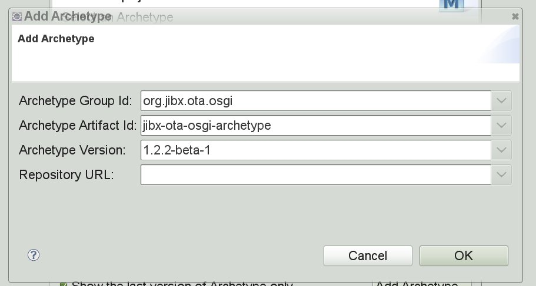
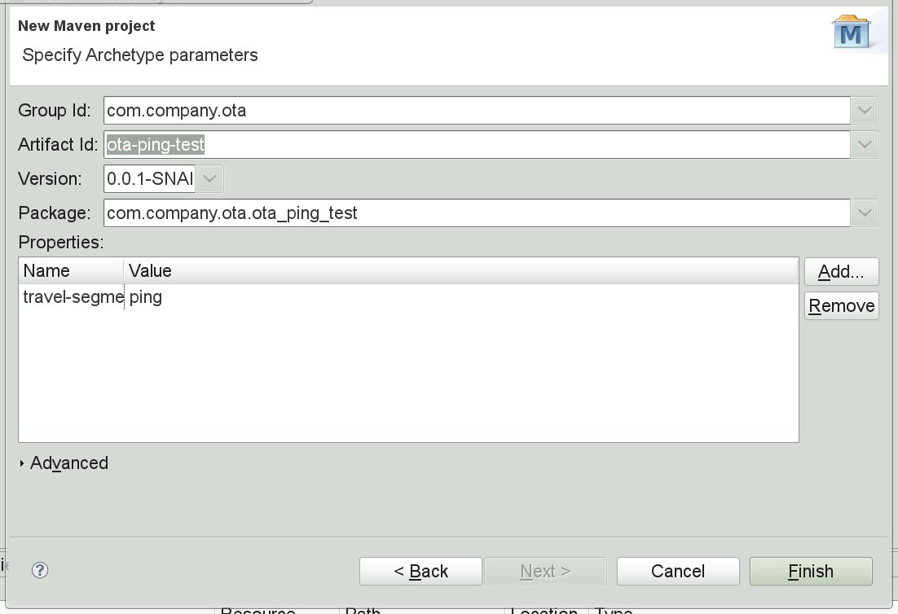
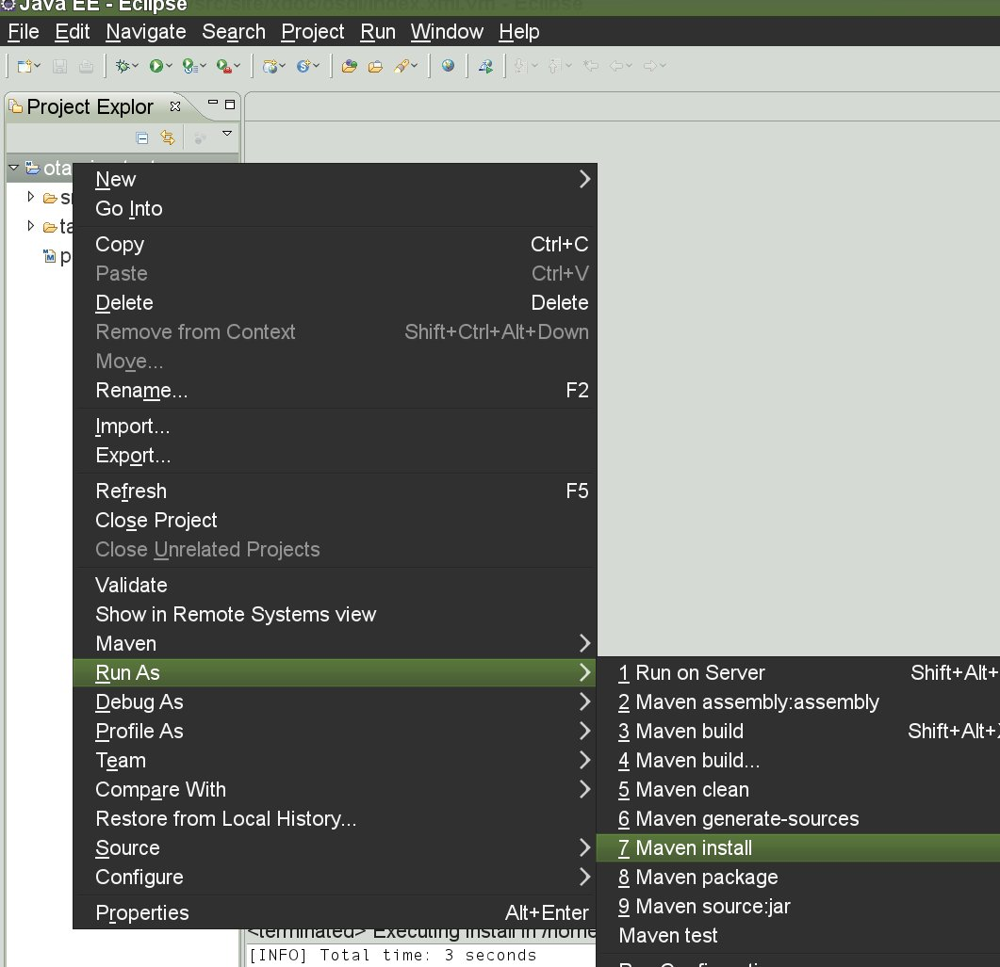
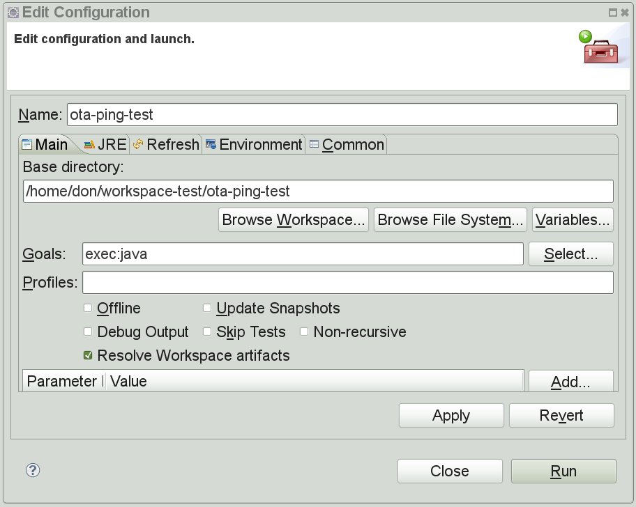
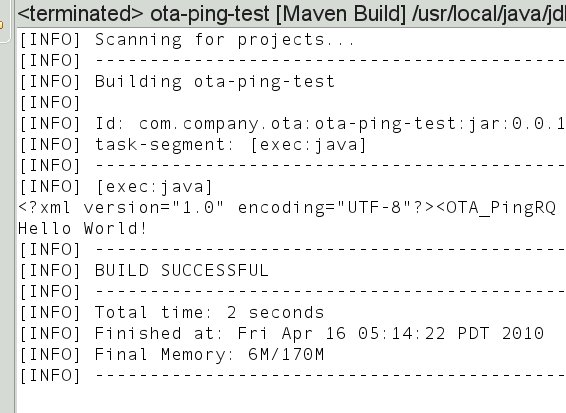
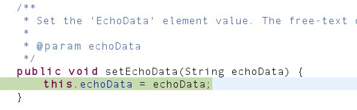

JiBX Opentravel OSGi Packaging Project is a pre-packaged OSGi package for using the OpenTravel schema.
It doesn't get much simpler than this.
This project has pre-packaged components ready to include into your project. Since the code has already been bound to the schema, you can start using it right now. Just add the maven dependencies to your project and you can start writing code.
Maven will automatically include all the dependent packages in your project and in your war file. OSGi will only load the modules that are needed on-demand. For example, If you are creating a hotel reservation, the profile schema package will only load if you link the reservation to a profile. No wonder there is so much excitement over OSGi.
Try it. it's easy:
Step 1: Add this dependency to your project:
<dependency>
<groupId>org.jibx.ota.osgi</groupId>
<artifactId>jibx-ota-osgi-hotel</artifactId>
<version>1.2.2-beta-1</version>
</dependency>
Step 2: Start writing code. Cool.
If you have about five minutes, you can create a project to create an opentravel message, convert it to xml, then convert it back to a java object. Here goes!
First, you need java, eclipse, and the eclipse maven plugin (m2eclipse). This is a pretty standard development environment.
From the eclipse menu, select: New -> project -> Maven -> Maven Project
Click 'Next', then click the 'Add archetype' button on the next screen
Fill in the fields with this information:
groupId: org.jibx.ota.osgi
artifactId: jibx-ota-osgi-archetype
version: 1.2.2-beta-1

Click 'Next' and fill this screen with whatever you want. I entered:
groupID: com.company.ota
artifactId: ota-ping-test

Click 'Finish' and your project is built.
Now we're ready to run it.
First, right click on your project and select 'Run as' -> 'Maven Install'

This compiles the code and gets any dependent code
Now, right click on your project and select 'Run as' -> 'Maven build...'
and enter exec:java as the goal
This runs your new program

You should see output similar to this:

What this program just did was to build an opentravel message, convert it to xml,
then convert it back to a java object and retrieve the data. Nice!
Take a look at your source code. It's pretty simple. It's pretty clean.
You may have to sync maven by right clicking your project and select maven -> update project configurations, then maven -> update dependencies. Now right-click and select maven -> download sources, then maven -> download javadocs.
Now the cool part. Open your source code (App.java).
Place a breakpoint at line 69 (ping.setEchoData("Hello World!");)
and right click App.java in the left nav bar and select Debug as -> Java Application.
When it stops, step into the setEchoData method and voila, you see the source for the
java class that represents the xml item, with comments straight from the schema. Very Cool!

Now that was pretty painless, huh?
Note: As you may have noticed, this is a sub-project of the JiBX/OTA open-source project. Hey, this is open source. We're going to point you to the best tools for the job!